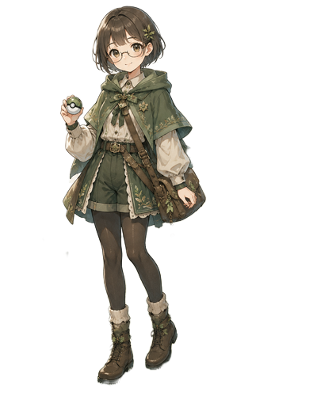

ポケモン風プロフィール
ポケモンのステータス画面をイメージした、遊び心のあるプロフィールデザインです。

なまえ：ひかる
Lv：33
タイプ：もり / ヒーリング
とくせい
やさしさのオーラ（まわりを落ち着かせる）
せいかく
おだやか ていねい
ステータス
制作の意図
ポケモンのステータス画面の楽しさをそのままに、
私の強みである“自然体で寄り添う”雰囲気を重ね合わせてデザインしました。
ゲームUIのワクワク感と、落ち着いた空気感の両方を大切にしながら、
見た人が思わず笑顔になるようなプロフィールページを作成いたしました。
こだわったポイント
- ステータス画面のレイアウトを参考にした、遊び心のあるUI構成
- ドットフォントを使い、ゲームらしさと読みやすさのバランスを調整
- エンジニアとしての個性を“ステータス”として表現し、キャラ性をプラス
- 柔らかい色味で統一し、世界観を崩さないようにデザイン
- HPゲージなどのUI要素を取り入れ、ゲーム画面のような楽しさを演出
使用技術
- HTML / CSS